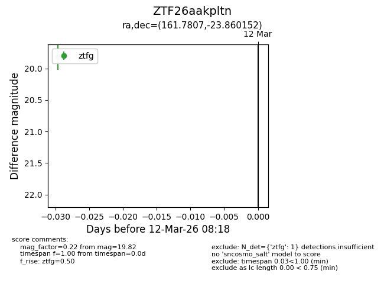
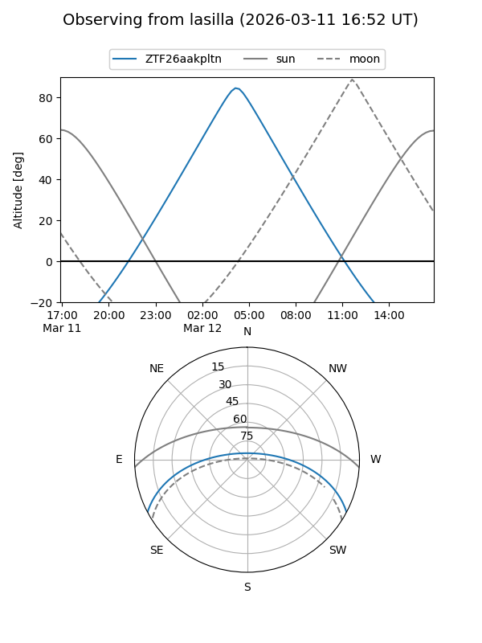
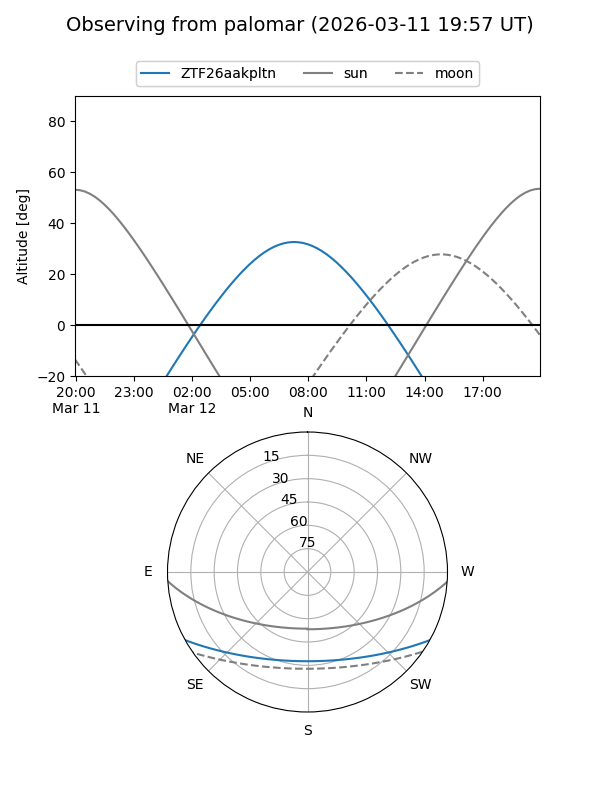

ZTF26aakpltn
Target ZTF26aakpltn at 2026-03-12 08:20
Aliases and brokers:
FINK: link
Lasair: link
ALeRCE: link
alt names
ZTF26aakpltn (ztf,fink_ztf)
Coordinates:
equatorial (ra, dec) = 161.7807,-23.86015
equatorial (HMS+DMS) = 10:47:07.38,-23:51:36.55
galactic (l, b) = (269.5755,+30.84022)
Flags:
Photometry:
last ztfg=19.82
1 ztfg detections
Lightcurve

Visibility


Additional plots